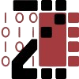
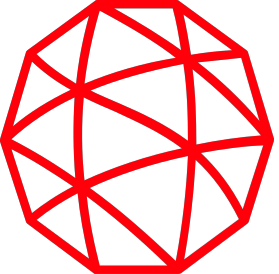
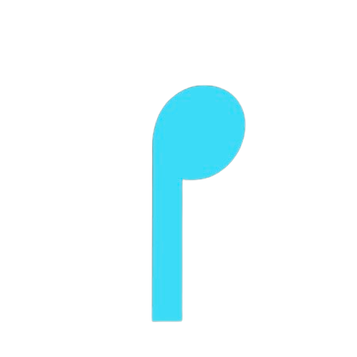

Experience

ZG'">
Cornell Zhang Research Group

ZG
Research Assistant: SP26 - present. Profiling Mixture-of-Experts inference on 8×H100 GPUs for an industry client designing custom AI silicon.
Read the full writeup →
Read the full writeup →

L3'">
L3Harris Technologies

L3
Software / ML Engineering Intern: Three internships across software, embedded, and FPGA. Currently (summer '26) an ML Engineer Intern building real-time, on-device text-to-speech: an INT8-quantized model running through ONNX Runtime on embedded radio hardware.

RS'">
RapStudy

RS
Software Engineering Intern: Full-stack development on a DoED-backed EdTech platform with a 3-engineer Cornell team.
Projects
Mini-TensorRT: DL Graph Compiler
A from-scratch C++ inference compiler: parses ONNX protobufs into a custom IR, fuses Conv-ReLU to cut DRAM round-trips (11.2% on cache-exceeding inputs), and runs a trained MNIST CNN through handwritten NCHW kernels that match ONNX Runtime's logits exactly.
Try it live (WASM) · View GitHub
Try it live (WASM) · View GitHub
Acoustic Shield: Tinnitus Hearing Device
A wearable hearing device for tinnitus relief, built across the full stack: live audio streams through a Teensy + SGTL5000 codec into a custom AudioStream class running up to five biquad notch filters at 44.1kHz, with coefficients computed on-device. A React Native app retunes the bands in real time over BLE. Filter math prototyped on desktop in C++ with RtAudio and verified against a Python reference implementation.
Scout (Backed by Cornell)
A platform helping Cornell student-athletes network with and track relationships across 45,000+ Cornell athletic alumni. Solo full-stack build (Next.js + Expo/React Native) on a multi-tenant Postgres backend, shipped to 200+ active users.
View Site
View Site
Lion AI Detection Suite
Trained a CNN on librosa features and ElevenLabs deepfakes; deployed via ONNX to mobile, Chrome extension, and desktop. Real-time audio capture + sliding-window inference + user alerts, shipped to 20+ users. Built with PyTorch and React Native.
View Site
View Site
HFT Mixture-of-Experts FPGA Engine
An FPGA trading pipeline that runs end-to-end in 444ns at 83.3M messages/sec. Register-partitioned limit order book, sparse MoE router pipelined to one trade per cycle, bit-exact RTL/C++ verification in Verilator.
View GitHub
View GitHub
Triton GPU Performance Kernels
Fused Triton kernels on H100. LayerNorm runs 45.7% faster with symmetric FP8 quantization. Scaled FlashAttention to 16K context by tiling for SRAM and computing softmax online in one pass.
View GitHub
View GitHub
Digital Level & Impact Monitor
An interrupt-driven tilt sensor and impact monitor on the FRDM-KL46Z (Cortex-M0+). Sleeps in
Watch Demo Video
__WFI between PIT timer wakeups; ARM assembly for the trig math; I2C accelerometer reads and UART alerting on impact.Watch Demo Video
Odyssey: Interactive Theorem Prover
An interactive theorem prover in OCaml: logical proposition simplification, automated SAT solving, and a parsing/evaluation pipeline for mathematical proofs with automated LaTeX export.
Watch Demo Video
Watch Demo Video
Hackathons
Point72 Cubist Hackathon
Built an AI-orchestrated modular chess engine evaluation system. Used Claude via an MCP server to autonomously test, benchmark, and compare diverse AI-generated chess engines using SPRT and perft.
View GitHub
View GitHub
UC Berkeley AI Hackathon
Vocera: Biometric authentication and synthetic voice detection system built leveraging FastAPI, SpeechBrain, and OpenAI Whisper.
View GitHub
View GitHub